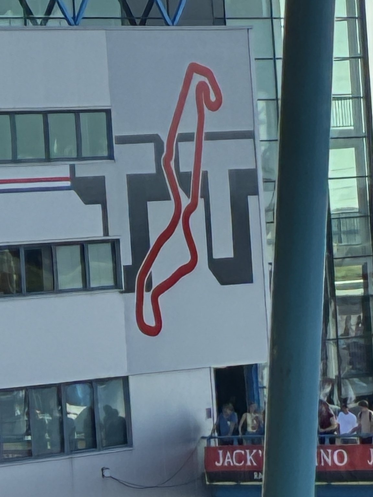
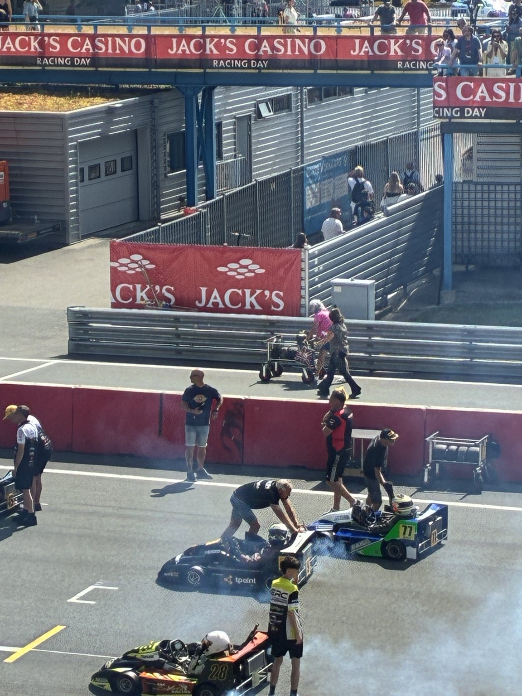
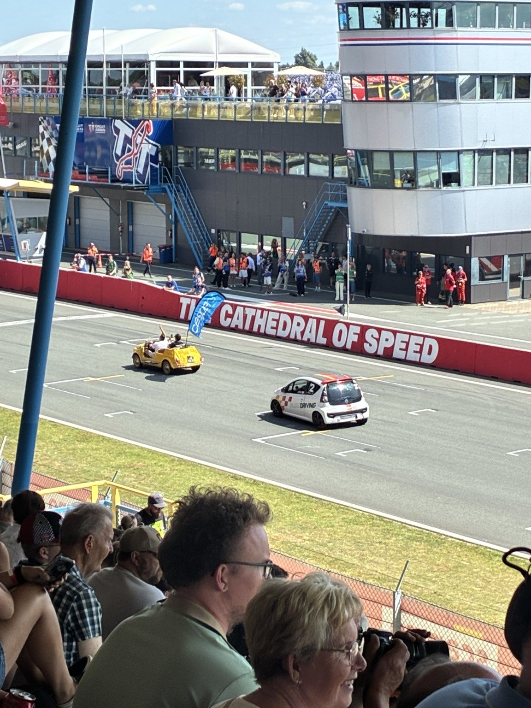
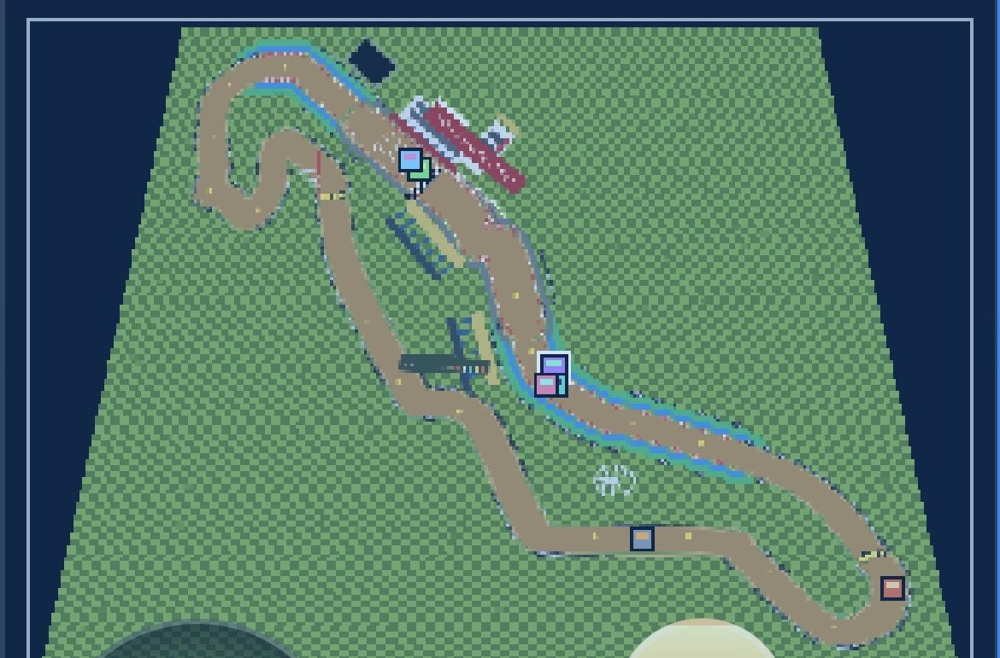
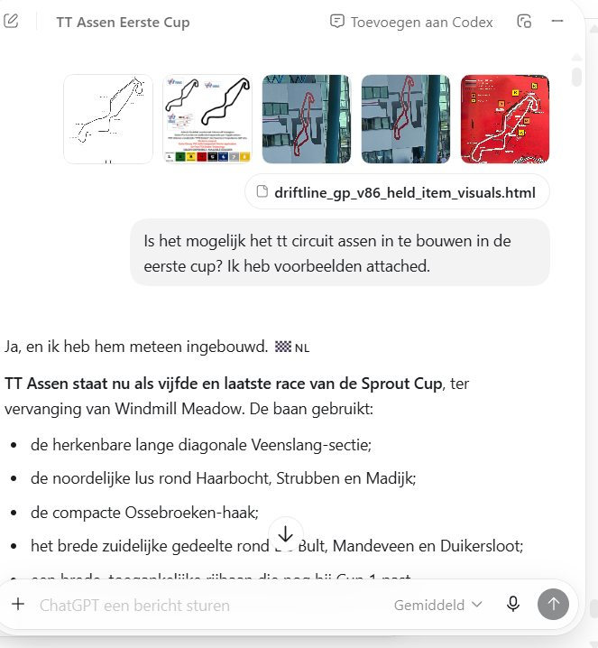

83playable HTML artifacts in this archive
v93latest mirrored build
SHA-256hash prefix recorded for each file
FIELD PROVENANCE • TT ASSEN
Jack’s Racing Day 2026 development session
2 August 2026 — Driftline GP builds v87 through v93 were created during and immediately after a visit to Jack’s Racing Day 2026. The session used on-site TT Assen visual reference and continued through the human–GPT chat workflow, turning the circuit visit into a preserved run of playable HTML iterations and follow-up control refinement.
The attached material below is preserved as development context: trackside reference photographs, an in-game TT Assen track capture from the resulting build sequence, and a chat-session capture showing the TT Assen first-cup request inside the conversational development workflow.
event build range: v87 → v93date: 2026-08-02workflow: human + GPT chatcontext: Jack’s Racing Day 2026





Milestone timeline
- v1 / index — Initial playable browser prototype.
- v4 — Start grid, shell-like item behavior, HUD layer.
- v8–v12 — DS-style map, coins, position/rescue/timer/items, hit state.
- v18–v26 — Track redesign, tilemap/biome expansion, beach/ghost/rescue systems.
- v28–v31 — CC classes, rubberband AI, results/cup styling.
- v35–v46 — Lap/finish/result/cup-point flow hardening.
- v47–v57 — Optimized roster, drift repair, CPU overtake/rivals, CC/menu/cup simplification.
- v58–v65 — Handmade Track 1 conversion and visual/asset integration.
- v66–v73 — Minimap/racer color consistency, wall/projectile logic, aura state visualization.
- v74–v77 — Crisp retro rendering, anti-stuck rescue, Free Ride track select.
- v78–v80 — StateLens live state plates, lowered rear plates, and drift mapped to Scout Left / Scout Right operators.
- v81 — Track 1 item blocks changed from question blocks to lightning blocks for first-cup visual consistency.
- v82 — Desktop layout rebuilt with the playscreen and minimap stacked vertically, higher PC-only rendering resolution, hidden touch controls on desktop, and a persistent keyboard legend.
- v83 — Keyboard drift changed from one ambiguous Space action to directional operators:
A = drift leftandD = drift right, selecting the matching drift state and animation. - v84 — Added a first-paint
LOADINGscreen with sequential dots and frame-yielding procedural track construction. - v85 — Hardened race-counter text, off-road slowdown, seeker speed and hold-behind release behavior for the dropper and green bouncer.
- v86 — Added visible held-item feedback behind the kart while preserving the v85 release logic.
- v87–v93 • Jack’s Racing Day 2026 / 2 August — TT Assen development run created during and immediately after the circuit visit: first-cup build, learning pass, hook fixes, continuous-hook pass, 1.6× world-scale pass, clockwise official-detail pass and subsequent input refinement.
- v93 — Green Shield Input Restoration — Normal tap on ITEM fires the green shield forward again. Long press (> 0.38s) holds the shield. Releasing after long press drops the shield behind the kart. Dropper behavior remains unchanged.
Version index
| Version | Playable file | Category | Size | SHA-256 prefix |
|---|---|---|---|---|
| v1 / index |
Index
index.html
|
Core prototype | 55 KB | a4b137735242 |
| v2 |
Mobile CPU Itemroulette
driftline_gp_v2_mobile_cpu_itemroulette.html
|
CPU / rivals | 58 KB | 0825063d6afa |
| v3 |
CPU Scale Itempads Points
driftline_gp_v3_cpu_scale_itempads_points.html
|
Race / cup flow | 61 KB | 8d698d57bb9b |
| v4 |
Startgrid Shellitems HUD
driftline_gp_v4_startgrid_shellitems_hud.html
|
Items / hazards | 66 KB | cc9e901e08ab |
| v5 |
Cleantrack Overlay Minimap
driftline_gp_v5_cleantrack_overlay_minimap.html
|
Core prototype | 68 KB | 3ee82256850c |
| v7 |
CPU Tweak Core
driftline_gp_v7_cpu_tweak_core.html
|
CPU / rivals | 80 KB | af03f17fbb43 |
| v8 |
Ds Map Coin Stability
driftline_gp_v8_ds_map_coin_stability.html
|
Core prototype | 82 KB | 2d923d6f357f |
| v9 |
Mass Friction Drift
driftline_gp_v9_mass_friction_drift.html
|
Handling | 88 KB | 1f19fc5f17a0 |
| v11 |
Position Rescue Timer Items
driftline_gp_v11_position_rescue_timer_items.html
|
Items / hazards | 114 KB | ee659fa24979 |
| v11.1 |
Drift Freeze Fix
driftline_gp_v11_1_drift_freeze_fix.html
|
Handling | 114 KB | bf11236122f7 |
| v12 |
Item Rendering Hitstate
driftline_gp_v12_item_rendering_hitstate.html
|
Items / hazards | 126 KB | 78fdeda03f06 |
| v14 |
Track Complexity Z Start Rescue
driftline_gp_v14_track_complexity_z_start_rescue.html
|
Core prototype | 170 KB | da94cd019e48 |
| v15 |
Start Grid Bridge Fix
driftline_gp_v15_start_grid_bridge_fix.html
|
Core prototype | 189 KB | 51eac3e02626 |
| v16 |
Best Playable Rebuild
driftline_gp_v16_best_playable_rebuild.html
|
Core prototype | 147 KB | 85b26698fecb |
| v18 |
Track Redesign Beach Biomes
driftline_gp_v18_track_redesign_beach_biomes.html
|
Track roster | 192 KB | dda55ff3b9bd |
| v19 |
Beach More Sea
driftline_gp_v19_beach_more_sea.html
|
Track roster | 194 KB | 4a2ad9da04c0 |
| v21 |
Global Looser Edges
driftline_gp_v21_global_looser_edges.html
|
Track 1 / visuals | 195 KB | c83022b04a25 |
| v22 |
Seeker True Homing
driftline_gp_v22_seeker_true_homing.html
|
Items / hazards | 202 KB | 6c04c7949acd |
| v23 |
Ghost Rescue Countdown Light
driftline_gp_v23_ghost_rescue_countdown_light.html
|
Track roster | 208 KB | 9cf7c94a7d62 |
| v23 |
Rescue Failsafe
driftline_gp_v23_rescue_failsafe.html
|
Core prototype | 209 KB | 6be3f62b30b8 |
| v24 |
Start Stoplight Hardfix
driftline_gp_v24_start_stoplight_hardfix.html
|
Core prototype | 212 KB | 3fd882981b02 |
| v25 |
Closed Tracks Green Light Projectiles
driftline_gp_v25_closed_tracks_green_light_projectiles.html
|
Core prototype | 218 KB | 896f5ff9056d |
| v26 |
Beach Sky Cleanup
driftline_gp_v26_beach_sky_cleanup.html
|
Track 1 / visuals | 221 KB | 29a297492581 |
| v28 |
CC Rubberband AI
driftline_gp_v28_cc_rubberband_ai.html
|
CPU / rivals | 245 KB | e787e90b68d0 |
| v29 |
Spin Reverse Rubberband Tune
driftline_gp_v29_spin_reverse_rubberband_tune.html
|
CPU / rivals | 249 KB | c8ebff8bbc9a |
| v31 |
GP Results Style Flow
driftline_gp_v31_gp_results_style_flow.html
|
Race / cup flow | 271 KB | 4395d9005fd1 |
| v33 |
Reverse Detection Fix
driftline_gp_v33_reverse_detection_fix.html
|
Core prototype | 280 KB | edf26863cb06 |
| v35 |
Lap Init And Finish Fix
driftline_gp_v35_lap_init_and_finish_fix.html
|
Race / cup flow | 288 KB | c3e03f4ba8d6 |
| v36 |
Lap 0 3 Four Round Fix
driftline_gp_v36_lap_0_3_four_round_fix.html
|
Race / cup flow | 293 KB | 48d7a7bf42d0 |
| v37 |
Lap Skip Countdown Cleanup
driftline_gp_v37_lap_skip_countdown_cleanup.html
|
Race / cup flow | 300 KB | 5b56737f9c56 |
| v38 |
Center Finish Auto Points
driftline_gp_v38_center_finish_auto_points.html
|
Race / cup flow | 309 KB | 83d0b18ab81d |
| v39 |
SNES Itemboxes Clean HUD
driftline_gp_v39_snes_itemboxes_clean_hud.html
|
Items / hazards | 320 KB | 01de4193f653 |
| v40 |
Finish Portraits
driftline_gp_v40_finish_portraits.html
|
Race / cup flow | 321 KB | 9f3dd96939a9 |
| v41 |
Minimap Finish Results Then Count
driftline_gp_v41_minimap_finish_results_then_count.html
|
Race / cup flow | 325 KB | 82a34324c3cf |
| v42 |
Final Lap Animated Results
driftline_gp_v42_final_lap_animated_results.html
|
Race / cup flow | 335 KB | 385272baae90 |
| v43 |
Final Lap Square Live Count
driftline_gp_v43_final_lap_square_live_count.html
|
Race / cup flow | 342 KB | efb7d19532f2 |
| v44 |
Results Next Race Main Menu
driftline_gp_v44_results_next_race_main_menu.html
|
Race / cup flow | 342 KB | 128a383e2674 |
| v45 |
Cups Trophies Buttons
driftline_gp_v45_cups_trophies_buttons.html
|
Race / cup flow | 354 KB | a97f6d2326be |
| v46 |
Compact Point Count Next Race
driftline_gp_v46_compact_point_count_next_race.html
|
Race / cup flow | 364 KB | 4a36c1635a48 |
| v47 |
Redesigned Tracks Optimized
driftline_gp_v47_redesigned_tracks_optimized.html
|
Core prototype | 386 KB | 34de8d293db8 |
| v48 |
Drift Button Repaired
driftline_gp_v48_drift_button_repaired.html
|
Handling | 391 KB | ee180bc470cc |
| v49 |
Lap And Cup Flow Fixed
driftline_gp_v49_lap_and_cup_flow_fixed.html
|
Race / cup flow | 401 KB | ceae8c6f2db2 |
| v51 |
Four State Lap Flow
driftline_gp_v51_four_state_lap_flow.html
|
Race / cup flow | 411 KB | f66388f510fd |
| v52 |
HUD And Point Count Restored
driftline_gp_v52_hud_and_point_count_restored.html
|
Core prototype | 413 KB | 266d1d7ffaaf |
| v53 |
Hidden Minus One Start Lap
driftline_gp_v53_hidden_minus_one_start_lap.html
|
Race / cup flow | 419 KB | 3e5579c4eecd |
| v54 |
Laps Good Points Next Race Restored
driftline_gp_v54_laps_good_points_next_race_restored.html
|
Race / cup flow | 427 KB | f0c8155b40cc |
| v55 |
CPU Overtake Rival Theatre
driftline_gp_v55_cpu_overtake_rival_theatre.html
|
CPU / rivals | 442 KB | a911ae12b429 |
| v56 |
CC Select Grand Prix Flow
driftline_gp_v56_cc_select_grand_prix_flow.html
|
Race / cup flow | 455 KB | fb0f3a2ca218 |
| v57 |
Simplified Cup Flow Trophies
driftline_gp_v57_simplified_cup_flow_trophies.html
|
Race / cup flow | 465 KB | fbefe17d5f9e |
| v58 |
Track1 Reference Layout
driftline_gp_v58_track1_reference_layout.html
|
Track 1 / visuals | 468 KB | 387835adcfaf |
| v59 |
Track1 Ccw Colors
driftline_gp_v59_track1_ccw_colors.html
|
Track 1 / visuals | 475 KB | eff139e49d33 |
| v60 |
Track1 Single Item Gate
driftline_gp_v60_track1_single_item_gate.html
|
Track 1 / visuals | 482 KB | a5806e803fb3 |
| v62 |
Master Track1
driftline_gp_v62_master_track1.html
|
Track 1 / visuals | 493 KB | ebffd1edbbb3 |
| v63 |
Track1 Assets Integrated
driftline_gp_v63_track1_assets_integrated.html
|
Track 1 / visuals | 512 KB | 797d7b99f0f4 |
| v64 |
Track1 Edges Cleanup
driftline_gp_v64_track1_edges_cleanup.html
|
Track 1 / visuals | 530 KB | 14fccb81f7cb |
| v65 |
Track1 3d World Focus
driftline_gp_v65_track1_3d_world_focus.html
|
Track 1 / visuals | 540 KB | ed72335dc6ec |
| v66 |
Minimap Racerselect Loadfix
driftline_gp_v66_minimap_racerselect_loadfix.html
|
Core prototype | 517 KB | 134e0e40b2ea |
| v67 |
Track1 3d Colored Walls Sync
driftline_gp_v67_track1_3d_colored_walls_sync.html
|
Track 1 / visuals | 517 KB | 061c8a6f7ee2 |
| v68 |
Track1 Solid Walls Pastel Sky
driftline_gp_v68_track1_solid_walls_pastel_sky.html
|
Track 1 / visuals | 522 KB | a803a3ca1f8b |
| v69 |
Green Bouncer Wall Ricochet
driftline_gp_v69_green_bouncer_wall_ricochet.html
|
Items / hazards | 525 KB | 4d7b84406d79 |
| v70 |
Track1 Precise Wall Collision
driftline_gp_v70_track1_precise_wall_collision.html
|
Track 1 / visuals | 529 KB | a066a13644c8 |
| v71 |
Road Safe Walls Minimap Items
driftline_gp_v71_road_safe_walls_minimap_items.html
|
Items / hazards | 535 KB | 1c15a0d9a1a1 |
| v73 |
Aura Rainbow World Minimap
driftline_gp_v73_aura_rainbow_world_minimap.html
|
Track 1 / visuals | 544 KB | a565e9d397a8 |
| v74 |
Crisp Retro Plus Resolution
driftline_gp_v74_crisp_retro_plus_resolution.html
|
Track 1 / visuals | 548 KB | 56a0eb85904b |
| v75 |
Road Checker Cleanup
driftline_gp_v75_road_checker_cleanup.html
|
Track 1 / visuals | 552 KB | c8ee5f63f52c |
| v76 |
Anti Stuck Rescue
driftline_gp_v76_anti_stuck_rescue.html
|
Core prototype | 555 KB | 3dda0178907b |
| v77 |
Free Ride Track Select
driftline_gp_v77_free_ride_track_select.html
|
Core prototype | 561 KB | d91439274433 |
| v78 |
StateLens Reactive States
driftline_gp_v78_statelens_reactive_states.html
|
StateLens / telemetry | 572 KB | 0fbe7a63b57a |
| v79 |
Stateplate Lowered
driftline_gp_v79_stateplate_lowered.html
|
StateLens / telemetry | 572 KB | 95e323bac0eb |
| v80 |
Drift Scout Left Right
driftline_gp_v80_drift_scout_left_right.html
|
StateLens / telemetry | 573 KB | 05dd0d0dfe6a |
| v81 |
Track1 Bliksemblokken
driftline_gp_v81_track1_bliksemblokken.html
|
Track 1 / visuals | 576 KB | 8e8766818be1 |
| v82 |
PC Stack Hires Keyboard
driftline_gp_v82_pc_stack_hires_keyboard.html
|
Core prototype | 588 KB | 3f73e4d96482 |
| v83 |
Directional Keyboard Drift
driftline_gp_v83_directional_keyboard_drift.html
|
Handling | 589 KB | fa5ee956bc10 |
| v84 |
Loading State & Provenance Link
driftline_gp_v84_loading_provenance_link.html
|
Core prototype | 594 KB | 057c990df9cb |
| v85 | Item Hold, Off-road & Seeker driftline_gp_v85_item_hold_offroad_seeker.html | Items / hazards | 601 KB | 63c388b8aa34 |
| v86 | Held Item Visuals driftline_gp_v86_held_item_visuals.html | Items / hazards | 605 KB | 0dbea0b82bf8 |
| v87 | TT Assen First Cup driftline_gp_v87_tt_assen_first_cup.html | TT Assen / field provenance | 606 KB | f0067ae9d8a4 |
| v88 | TT Assen Learning Cup driftline_gp_v88_tt_assen_learning_cup.html | TT Assen / field provenance | 606 KB | 626cc8cead2b |
| v89 | TT Assen Hook Fixed driftline_gp_v89_tt_assen_hook_fixed.html | TT Assen / field provenance | 606 KB | dfe051c63ab4 |
| v90 | TT Assen Continuous Hook driftline_gp_v90_tt_assen_continuous_hook.html | TT Assen / field provenance | 606 KB | 90158fcfe3bc |
| v91 | TT Assen 1.6× World Scale driftline_gp_v91_tt_assen_1_6x_world_scale.html | TT Assen / field provenance | 632 KB | 2824c5f72dee |
| v92 | TT Assen Clockwise Official Detail Pass driftline_gp_v92_tt_assen_clockwise_official_detail_pass.html | TT Assen / field provenance | 653 KB | b545160a1b89 |
| v93 | Green Shield Tap Fire / Long-Press Drop driftline_gp_v93_green_shield_tap_fire_longpress_drop.html | Items / hazards | 654 KB | f529f5a890d9 |